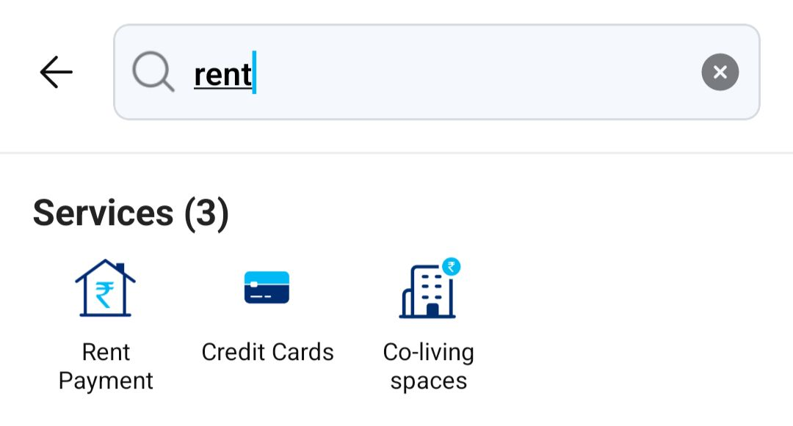
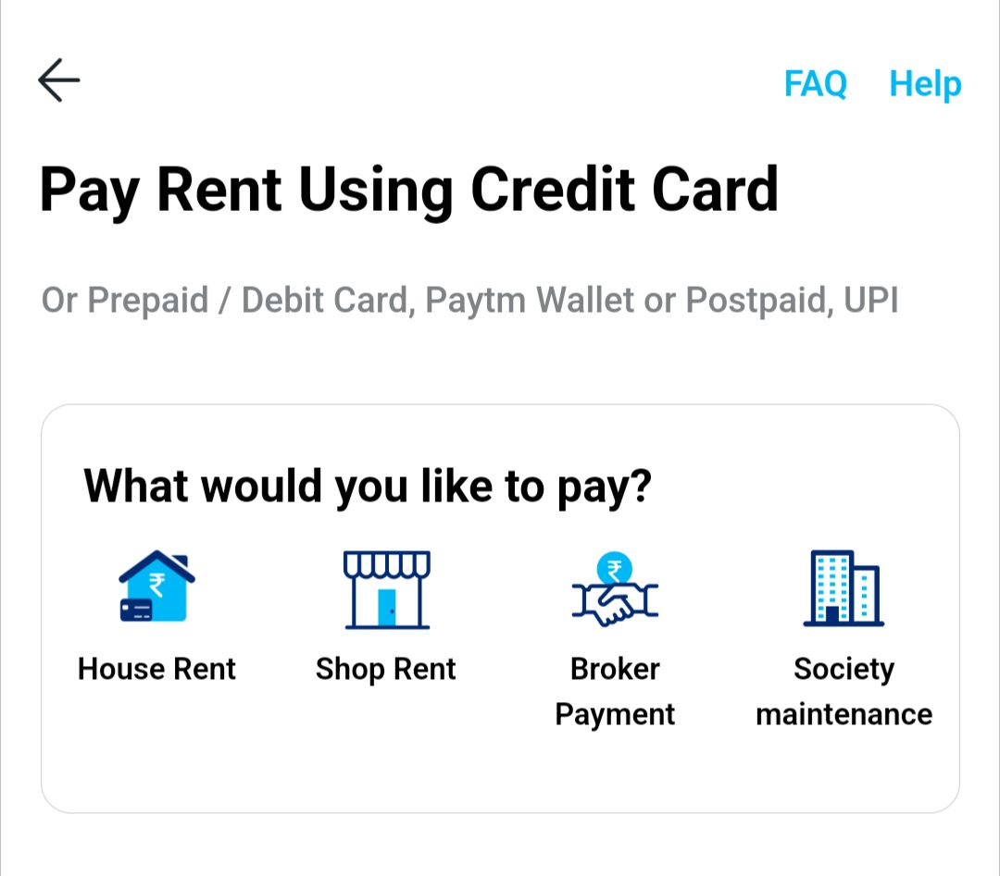
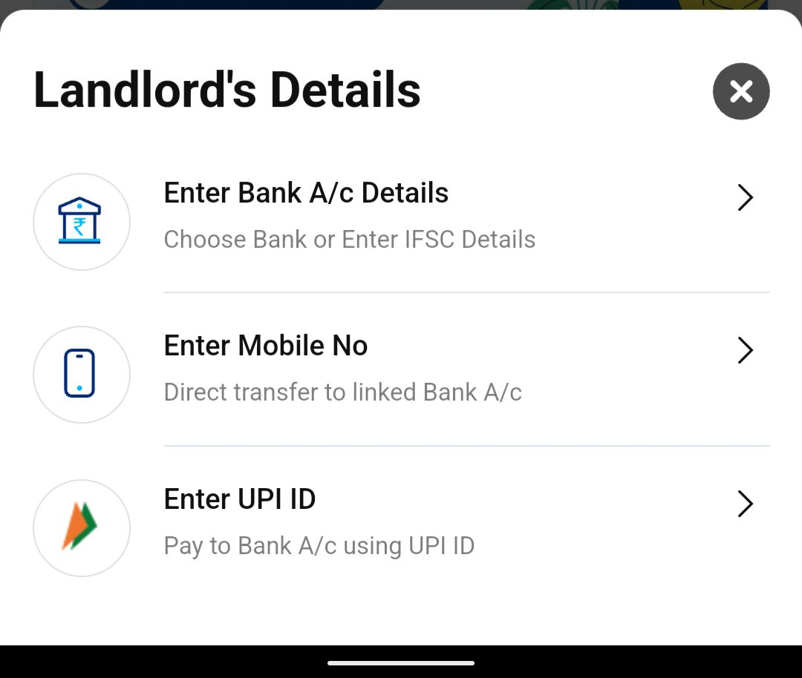

Introduction:
RBI (Reserve Bank of India) യുടെ ഈയിടെ വന്ന ഉത്തരവ് പ്രകാരം Paytm Payments Bank ൽ users ന് പുതുതായി അക്കൗണ്ട് തുടങ്ങാൻ കഴിയില്ല.
RBI ban on Paytm Bank to onboard new customers expected to be resolved in 3-5 months: Paytm CFO
എന്നാൽ Gpay, PhonePe ഒക്കെ ഉപയോഗിക്കുന്നതുപോലെ Paytm ആപ്പിൽ മറ്റു ബാങ്ക് അക്കൗണ്ടുകൾ add ചെയ്ത് transaction നടത്തുകയോ wallet ലേക്ക് add ചെയ്ത് ഉപയോഗിക്കുകയോ ഒക്കെ ചെയ്യാം.
Paytm wallet ൽ add ചെയ്ത തുക, സാധാരണ ഗതിയിൽ KYC (Customer identity verification) ചെയ്യാതെ ബാങ്ക് അക്കൗണ്ടിലേക്ക് മാറ്റാൻ കഴിയില്ല.
RBI യുടെ ബാൻ (barring) ഉള്ളതിനാൽ നിലവിൽ Paytm ൽ KYC ചെയ്യാനും സാധിക്കില്ല.
In this case,
Paytm wallet ൽ ഉള്ള ക്യാഷ് KYC ചെയ്യാതെ എങ്ങനെ ബാങ്ക് അക്കൗണ്ടിലേക്ക് മാറ്റാം എന്നു നോക്കാം...
അതിനായി ആദ്യം Paytm ആപ്പ് തുറന്ന് അതിൽ rent എന്ന് സെർച്ച് ചെയ്യുക.
Results ൽ വരുന്ന Rent Payment സെലക്ട് ചെയ്ത് House Rent സെലക്ട് ചെയ്യുക.
ശേഷം upi ഐഡിയോ അക്കൗണ്ട് ഡീറ്റൈൽസോ കൊടുത്ത് wallet ൽ ഉള്ള ക്യാഷ് 1% സർവീസ് ചാർജ്ജ് നൽകി ബാങ്ക് അക്കൗണ്ടിലേക്ക് മാറ്റാവുന്നതാണ്.
Screenshots:



NB: മിനിമം എമൗണ്ട് ₹2000 ആണ്.
(സർവീസ് ചാർജ്ജ് ₹22)
Read more
• Android Love ❤️